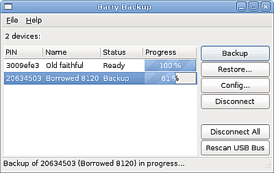
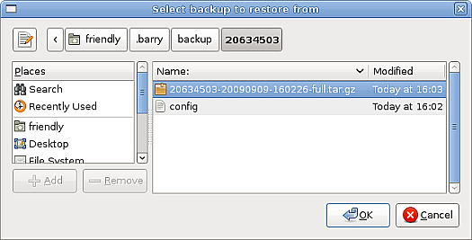
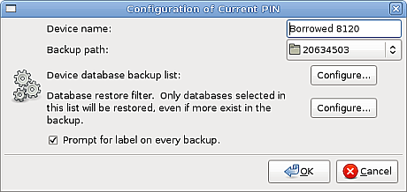
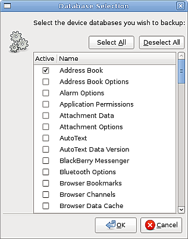

Backups are currently performed using the Barry Backup GUI program, located in the gui/ directory of the source tarball. Instructions for building the GUI can be found on the Install and CVS pages.
The Barry Backup GUI program is written using the GTK+ library. If you do not use the Gnome desktop, then the default theme for GTK+ applications often looks terrible.
Themes can be chosen for GTK+ apps without Gnome's settings or daemons interfering with your desktop of choice.
Search under the /usr/share/themes directory for 'gtkrc' files. Pick the one you like best, and then include it by reference in your .gtkrc-2.0 config file in your home directory.
For example, suppose you want to use the GTK+ Clearlooks theme. Your .gtkrc-2.0 file would contain:
include "/usr/share/themes/Clearlooks/gtk-2.0/gtkrc"
When Backup starts, it scans the USB bus for all the Blackberry devices it can find and lists them in the main screen. The first device listed is automatically connected and highlighted.
You can connect to different devices on the fly by selecting the desired device in the list. The currently highlighted device determines what device the buttons to the right will operate on.
When connecting to a device for the first time, you are prompted to give the device a name. This will be linked to the device's PIN number for easy identification later.
The main screen presents you with a number of options.
The Backup button initiates the backup process for the currently selected device. Multiple backups and restores can be run at once.
When backing up your device, your data is saved by default in a compressed tar file in your home directory, under ~/.barry, organized by PIN number. Each tar backup file is given a timestamp in its filename. The destination directory can be changed per device, using the Config... button.
When the backup starts, you are prompted to give the backup an optional name. If you specify a name, it will be used as part of the tar filename.
Pressing the Restore button will show a File Open dialog, pointing to your ~/.barry directory, for the current device PIN.
You are not limited to the tar files in this directory, nor are you limited to backup files from the same device. You can use this tool to copy data from one device to another.
The restore is governed by your current configuration, which determines what databases are restored. Any database that is restored will be completely erased before the backup data is re-written. If the source backup file contains no data for that database, then the database will merely be erased.
There are some databases that are read-only on the BlackBerry. In addition, if your device is connected to a BES, you may not be able to restore your data. If you get errors when trying to restore a certain read-only database, disable that database in the Restore Configuration dialog, as described below.
Pressing the Config button opens the config options dialog as shown below.
You can rename your device here, set a different backup target directory, and select whether backups should have labels or not. If this checkbox is selected, you will be prompted for an optional label each time you create a new backup.

Both backup and restore operations have their own database filters which can be configured here. For the backup filter, only the enabled databases will be saved. For the restore filter, only the enabled databases will be restored, even if the backup file contains more data.
Each filter configure button provides essentially the same dialog, containing a list of databases available on your device, as well as checkboxes to enable them.
This configuration is saved per device PIN. If you backup a different device, you will need to configure its backup strategy again. You can only change the configuration for the current device with these dialogs.
The Disconnect and Disconnect All buttons let you escape the device's Desktop mode while keeping the program running. It is possible to disconnect during a backup or restore, but this may leave your device data in an unknown state.
This button refreshes the device list, which is useful when a new device has been plugged in.